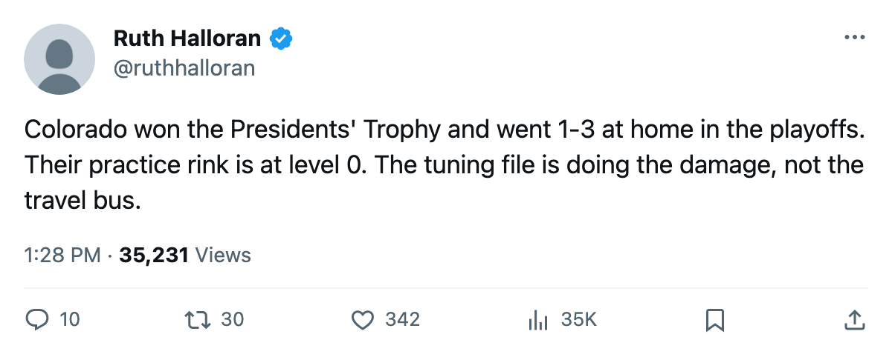
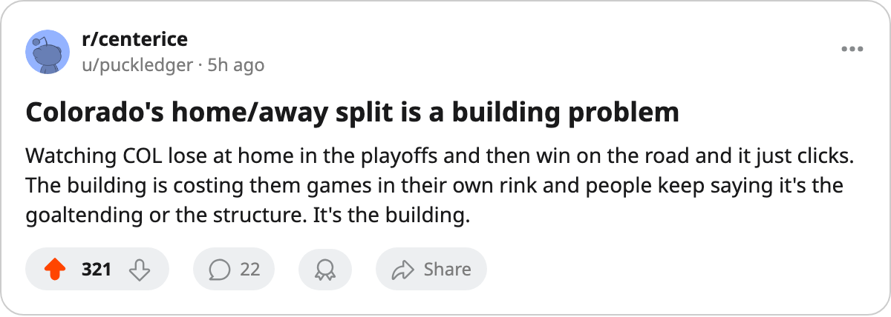

The Practice Tax: six clubs won more on the road, five of them run the practice rink at level zero
The tuning file moves all attributes at home. Colorado's building taxes them in front of 16,577 fans a night and lets them walk free on yours.
 Ruth HalloranBusiness of hockey · The Building
Ruth HalloranBusiness of hockey · The Building
 Colorado Avalanche finished 43-23-6, 112 points, the Presidents' Trophy. The club went 29-12 on the road, a .707 clip that is the best away record in this league. At home: 24-17. Five games fewer won in front of 16,577 season-average fans than on someone else's building.
Colorado Avalanche finished 43-23-6, 112 points, the Presidents' Trophy. The club went 29-12 on the road, a .707 clip that is the best away record in this league. At home: 24-17. Five games fewer won in front of 16,577 season-average fans than on someone else's building.
The buildings table shows why. Colorado carries its practice rink at level 0, which the tuning file values at -6, the bottom of the scale. Practice moves all attributes at home. Travel sits at level 4, which reads +0. Every home game pays the tax. Every road game does not.
Six clubs won more games on the road than at home this season. Five of them run practice at 0. The sixth,  Minnesota Wild, runs practice at 2 and its gap is one game (18 away wins to 17 at home). The five with the penalty are the five that matter.
Minnesota Wild, runs practice at 2 and its gap is one game (18 away wins to 17 at home). The five with the penalty are the five that matter.
The pattern is structural
 Washington Capitals runs the same structure. Practice 0 (-6), travel 3 (-1). The record: 19-22 home, 29-12 road, a ten-game surplus on the highway. Shawn Holliday's club is up 3-0 on
Washington Capitals runs the same structure. Practice 0 (-6), travel 3 (-1). The record: 19-22 home, 29-12 road, a ten-game surplus on the highway. Shawn Holliday's club is up 3-0 on  Tampa Bay Lightning in the second round, having won two games in Tampa Bay's building and one in their own.
Tampa Bay Lightning in the second round, having won two games in Tampa Bay's building and one in their own.
 Boston Bruins completes the group. Practice 0, travel 5 (+1). Boston went 19-22 home and 25-16 away, a six-game road surplus. Their own rink, taxed by the tuning file at every attribute on every home night, produced the same losing record as Washington's.
Boston Bruins completes the group. Practice 0, travel 5 (+1). Boston went 19-22 home and 25-16 away, a six-game road surplus. Their own rink, taxed by the tuning file at every attribute on every home night, produced the same losing record as Washington's.
These three clubs share a payroll profile that makes the gap harder to ignore. Colorado spends $71.56M, the third-highest payroll in the league, at $0.64M per point. Washington spends $55.92M at $0.54M per point. Boston spends $43.97M at $0.45M. They are spending on players. The practice rink is at the bottom.
| club | practice | travel | home | away | surplus | payroll | per point |
|---|---|---|---|---|---|---|---|
| Colorado Avalanche | 0 (-6) | 4 (+0) | 24-17 | 29-12 | +5 | $71.56M | $0.64M |
| Washington Capitals | 0 (-6) | 3 (-1) | 19-22 | 29-12 | +10 | $55.92M | $0.54M |
| Boston Bruins | 0 (-6) | 5 (+1) | 19-22 | 25-16 | +6 | $43.97M | $0.45M |
 Calgary Flames Calgary Flames | 0 (-6) | 2 (-2) | 15-26 | 16-25 | +1 | $45.93M | $0.66M |
 St. Louis Blues St. Louis Blues | 0 (-6) | 1 (-4) | 19-22 | 20-21 | +1 | $57.44M | $0.67M |
The five above carry the practice penalty. The three with a surplus of five games or more (COL, WSH, BOS) all run travel at 3 or above, where the tax is negligible. The two with one-game gaps (CGY, STL) carry travel at 2 and 1, a tax of -2 and -4 respectively. The road advantage is smaller when the club pays on both ends.
The clubs that pay twice
Nine clubs run practice at 0. The four that did not win more on the road all pay the travel tax as well.  New York Rangers runs practice 0 and travel 1 (-4): 23-18 home, 14-27 road, a nine-game deficit on the highway.
New York Rangers runs practice 0 and travel 1 (-4): 23-18 home, 14-27 road, a nine-game deficit on the highway.  Florida Panthers runs both tracks at 0: practice 0, travel 0. The result is 15-26 at home and 15-26 on the road, identical. The two penalties cancel.
Florida Panthers runs both tracks at 0: practice 0, travel 0. The result is 15-26 at home and 15-26 on the road, identical. The two penalties cancel.  Edmonton Oilers at practice 0, travel 2 (-2), went 23-18 home and 22-19 away, a single game separating them.
Edmonton Oilers at practice 0, travel 2 (-2), went 23-18 home and 22-19 away, a single game separating them.  San Jose Sharks at practice 0, travel 2 (-2), went 18-23 home and 14-27 away.
San Jose Sharks at practice 0, travel 2 (-2), went 18-23 home and 14-27 away.
The mechanism is the same in every case. Practice at 0 costs -6 on every attribute at every home game. Travel at 0 costs -6 on every attribute at every road game. Where a club carries both, neither advantage is netted out and the home/away split is flat. Where a club carries the practice penalty but not the travel penalty, the road record exceeds the home record. The building produces the gap; no coaching adjustment or travel schedule moves it.
What it cost Colorado in April
The Presidents' Trophy club lost to the eighth seed in seven games.  Phoenix Coyotes carried a -6 travel tax all series and went 4-0 on the road against Colorado, winning in Denver on nights 1, 5 and 7. COL went 1-3 at home, 3-0 away. Their practice rink sat at 0 through all seven games. Kerry Morassutti's roster cost $71.56M and the building gave back -6 on every attribute every time they stepped on their own ice.
Phoenix Coyotes carried a -6 travel tax all series and went 4-0 on the road against Colorado, winning in Denver on nights 1, 5 and 7. COL went 1-3 at home, 3-0 away. Their practice rink sat at 0 through all seven games. Kerry Morassutti's roster cost $71.56M and the building gave back -6 on every attribute every time they stepped on their own ice.
The previous edition of this column showed that five non-playoff clubs carried the maximum road penalty and none won 20 games on the highway. The practice side of the file is the mirror image, and the tuning file is as blunt on this track as it is on travel. Level 0 costs every home game. Level 4 costs nothing. The five clubs that sit at the bottom and play well enough away to make the difference visible are what the tuning table predicts, not outliers.

